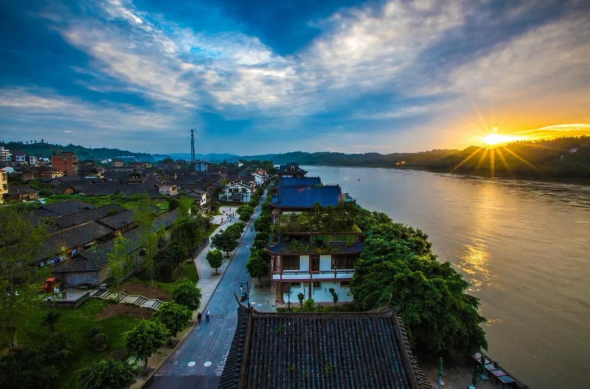

兴文石海
位于四川省宜宾市兴文县，处于四川盆地与云贵高原过渡地带
总面积约156平方公里，是世界地质公园、国家级风景名胜区。
其地质遗迹主要有：二叠纪地质剖面、地表喀斯特地形、天坑

古镇.李庄
位于四川省宜宾市翠屏区李庄坝，为国家AAAA级景区。因镇域有一天然大石柱俗名“李庄"而得名，地形平坦
李庄古镇古为渔村，始建于南朝梁代（公元540年，一说548年），汉代曾在这里设驿站，为明、清水运商贸之地
古镇核心保护区1平方千米。有禹王宫、东狱庙、南华宫、李庄文化抗战博物馆等景点。
蜀南竹海
蜀南竹海是最大的天然竹林景区，是世界罕见、中国唯一的集竹景、山水、湖泊、瀑布、古庙于一体
同时兼有历史悠久的人文景观的竹文化、竹生态休闲度假旅游目的地。蜀南竹海的植被覆盖率达92.4%
景区内绿色怡人、空气清新，是一座天然的绿色大氧吧。更是川南地区著名的影视基地,《卧虎藏龙》、《大人物》、《大酒商》、《风云2》、《爱到春潮滚滚来》、《勇士》、浙江卫视《24小时》真人秀栏目等诸多影视作品和综艺节目都将蜀南竹海作为了外景拍摄地点。